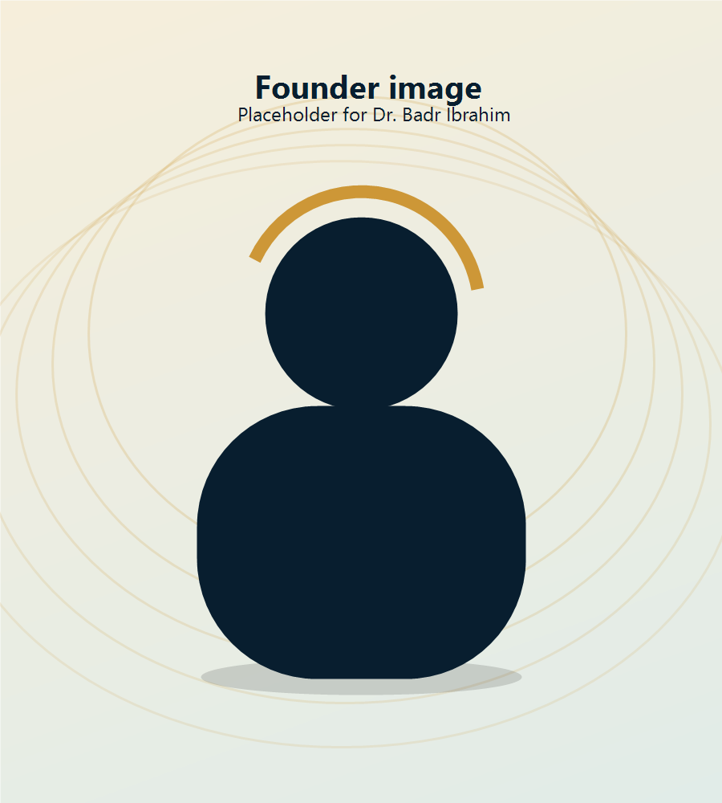

Academy
Learning programs, workshops, and practical courses.
A learning, coworking, and creative hub built to help ambitious minds find focus, build skills, and grow.
Madar Hub was founded by Dr. Badr Ibrahim, founder of Badr Academy, to create a modern space where learning, focus, creativity, and innovation come together.
The idea behind Madar Hub is simple: people grow faster when they are in the right orbit. An orbit gives direction. It creates rhythm. It turns scattered effort into focused movement.
Madar Hub was created for students, creators, entrepreneurs, professionals, and young people who want a better environment to learn, work, create, and build their future.
Learning, creativity, technology, and community in one modern space.
Learning programs, workshops, and practical courses.
A focused environment for studying, working, building, and collaborating.
A space for creators, educators, and businesses to record professional digital content.
Training and events that help people use modern tools, AI, automation, and digital skills.
Programs inspired by Badr Academy to help people learn faster, remember better, and study smarter.
Digital literacy, productivity, communication, content creation, and future-ready skills.

Dr. Badr Ibrahim is a Sudanese doctor, memory athlete, coach, content creator, and founder of Badr Academy. His work focuses on helping people learn faster, improve memory, develop focus, and build practical skills for the modern world.
Through Madar Hub, he aims to create a physical space where education, creativity, technology, and community meet.
To help people move from scattered effort to focused progress through learning, creativity, community, and innovation.
To become one of Kigali’s leading hubs for learning, coworking, digital creation, AI skills, and youth development.